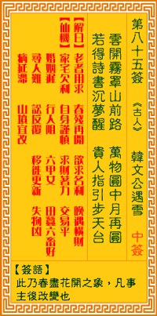

观音灵签第八十五签 【韩文公遇雪】 |
 | |||
重开山后藏前事 万宝园中可再图 醉咏新诗添逸兴 贵人接引上云衢 |
||||
| 【吉凶】 | 上上签 | 【宫位】 | 申宫 | |
| 【签语】 | 此卦春尽花开之象，凡事主后改变也。 | |||
| 【解曰】 | 老者用求 春残再开 欲求名利 晚遇横财 | |||
| 【仙机】 | 此签家宅欠利，自身谨慎，求财着力，交易平，婚姻迟，田蚕六畜好，行人阻，六甲女，寻人难，讼反复，移徙更新，失物凶，病延滞， 山坟宜改。 | |||
| 【详解】 | 重新出发，将过去的事封存，在万宝园中再度聚首;安闲快乐地把酒言欢吟诗作乐，待得贵人牵引时，就能一鸣惊人了啊。 老者还来，春暮风和，欲求名利，早晚遇财。此签春暮花开之象，凡事求谋俱吉。 本签者。暮春百花盛开之时。凡百事求谋俱吉者也。沉滞已久之命运。于今逐渐入佳境。珍惜此时。把握本刻。立即动之。汝之运途将为尔辟坦途。亦即是万宝园 中可再团。易言之。老者还来春暮风和欲求名利早晚遇财。 此签有”百折不挠”之意。提醒当事人，凡事努力不懈。其实不管做什么事、求什么学问，最重要的就是要有恒心跟毅力。但在日复一日的过程中，人容易变得怠 惰且厌倦，也最恐因而导致事情前功尽弃、努力付诸流水。此刻心态的调整很重要，必须沉得住气，时刻自我期许。把握任何可以练习揣摩的机会，深刻了解所学 ，也可同时加强信心。对于他人的批评与指责，不妨虚心接受，当成激励自己的指教。多方尝试与努力改进缺失之后，定可融会贯通并且活用，将专才彻底发挥到 淋漓尽致。 | |||
| 【典故】 | 唐朝时大文学家，韩愈，谥文公，韩文公的侄儿韩湘子（八仙之一）会法术。一天文公生日，湘子到来贺寿，文公说：“你有法术使美酒 开花吗？”湘子说：“可以。”不久果然美酒开花，花间现出二行金字：云横秦岭家何在，雪拥蓝关马不前。文公不解，后来文公被朝廷贬职，到了蓝关，遇到大风雪，马不能前 进，文公才悟其意 | |||